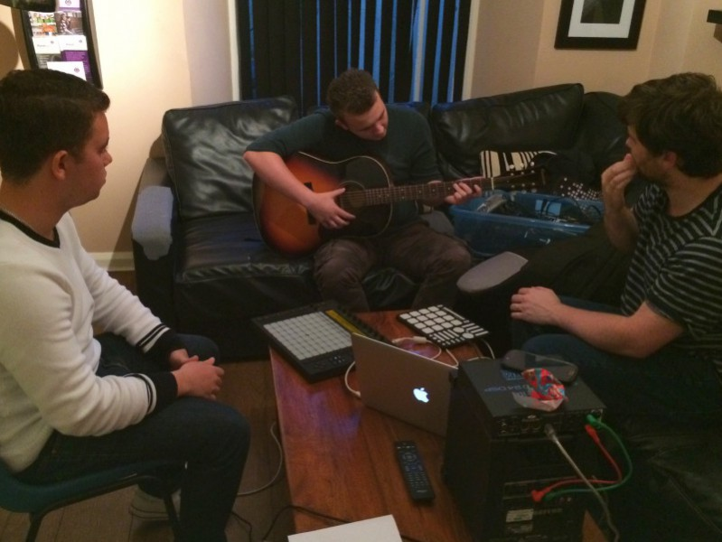
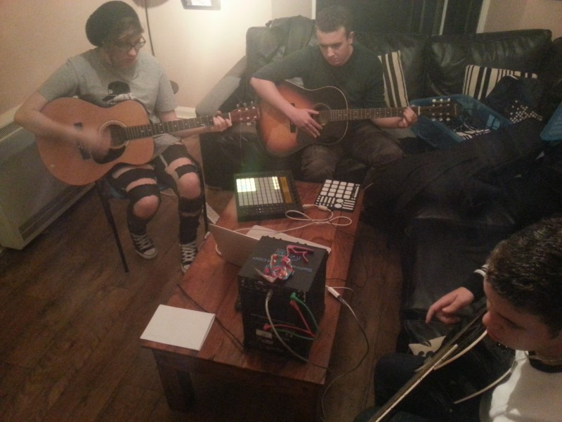
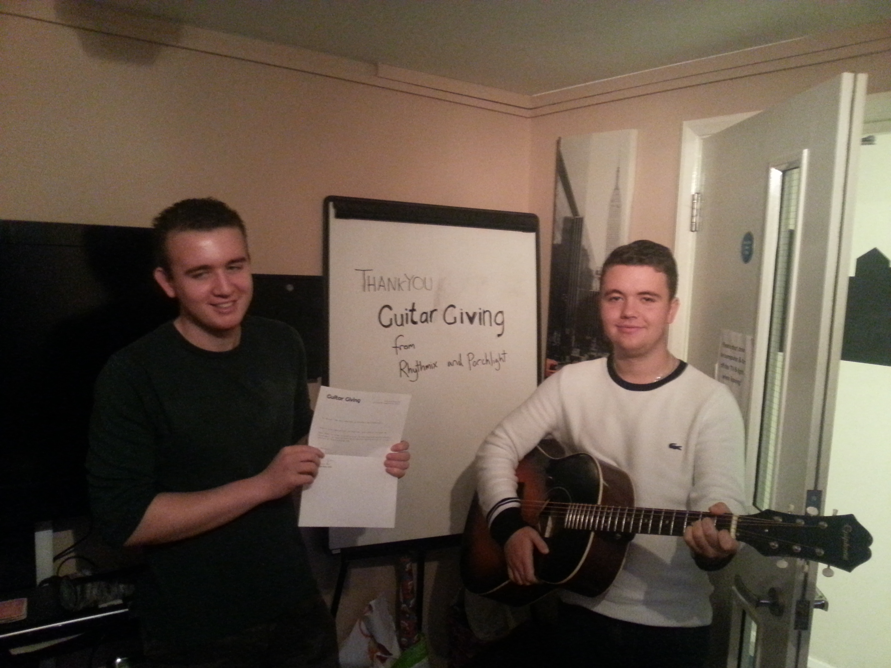

The first session
The Shed started life as Guitar Giving in 2015 and this was our first story!
We’re very proud to have played our small part in the incredible work that all the wonderful people at Rhythmix and Porchlight are doing. If you also believe in the power of music to change lives check them out and support them.
Based in Kent, Porchlight have been working with a music charity Rhythmix to give young people guitar lessons. The only issue was that the guys weren’t able to practice outside of their lessons as they didn’t have their own guitars – that’s where we were able to help.
We look forward to more collaborations with Rhythmix in the future!
“Thank you so much for working with Rhythmix, your guitar has made a great impact already on the young people in Canterbury.”
Sam Halligan, Rhythmix Music
